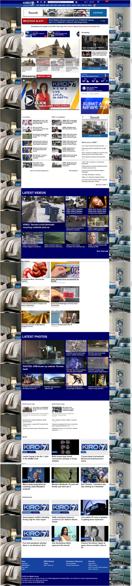

This week I’ll focus on a website in terms of usable design. My chosen site is kiro7.com. This site is for a Seattle-area television station's local news program. It serves to replicate and augment the news you would view on TV. The site contains many news video clips along with regular articles. The usable design elements I’ll use to analyze the landing page are:
- Are navigational elements clear?
- Does the visual design enhance or detract from the content?
- Can I note a clear hierarchy of content?
- Is it clear where I am on the site?
Are navigational elements clear?
The first impression on the site is it follows convention with its top of the page placement of navigational elements. It may take visitors a moment or two to determine where each menu item will take them. For example, it is not clear what the difference is between “LIVE”/“Newscast” in the drop-down menu and “NEWS” and “VIDEO” in top menu. As visitors hover on each top menu item, they will find a plethora of drop-down menu items.
The visual design of the site does not enhance the content. The advertisement images, that frame the site content gives the site a crowded, overwhelming appearance. The below screenshot of the landing page, shows the length of the page is very long. It took over 10 screenshots to capture the entire page on my 21 inch monitor. (Make sure you are ready to stay a while when you start scrollig down this page!) Screenshots of the landing page of kiro7.com taken April 10, 2019:  Whew! Finally the end of the screenshots of landing page of kiro7.com taken April 10, 2019:
Can I note a clear hierarchy of content?
The page does have a little sense of hierarchy, for example “Latest” items have a dark blue background. However, due to the overwhelming amount of images and content on the page, it needs a clearer hierarchy. From the layout, each content is given the same amount of real estate. I understand their need to produce income from the page, but for usable design sake, I suggest eliminating advertisement image borders. As Steve Krug, suggests in his 2014 book “Don’t Make Me Think – Revisited” keeping promotional items from overcrowding the page “requires constant vigilance, since it usually happens gradually,..”(100)
Because the page does not have a clear visual hierarchy, the content block is also muddled. A visitor cannot quickly determine whether the clickable items on the page will bring you to an outside domain or keep you still on the kiro7.com domain. Conclusion
My examination of kiro7.com found that the site does have a usable navigation, however design elements on the page makes it less than optimally usable. The main issues are lack of visual hierarchy of content and overload of promotional items, which resulted in lack of clear direction leaving visitors feeling lost. For the landing page to function well, the web designer will need to pay attention to these issues. I think the first step should be to find ways to lessen the promotional overload by dispersing it. Choosing different visual scales for promotions and content will be a good start.